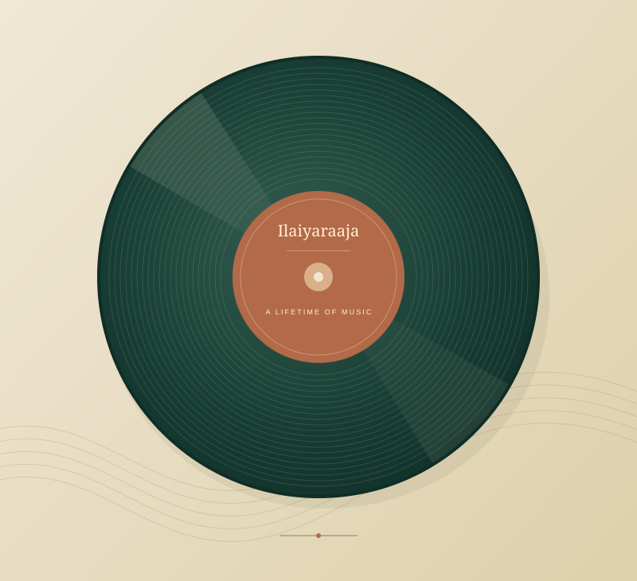

Love
Learning to feel.
Ilaiyaraaja’s music taught me love. It is part of the way I understand and feel that emotion.
Music / A lifelong companion
Always Ilaiyaraaja.
All my life, I have listened to Ilaiyaraaja. His music has been with me through sorrow and happiness, and through every part of my life.
What his music means to me
What music has given me
Music taught me love.Music taught me passion.Music taught me creativity.Music taught me everything.— Vidya
In every part of life
Different emotions. The same music beside me.
Love
Ilaiyaraaja’s music taught me love. It is part of the way I understand and feel that emotion.
Passion
His music taught me passion—the feeling of caring deeply, and giving something a place in my life.
Creativity
Music taught me creativity. Ilaiyaraaja’s music is part of the way I think, imagine, and find inspiration.
Sorrow
His music is there in my sorrow. It has a place in the difficult parts of life, just as it does in the happy ones.
Happiness
His music is there in my happiness too. The joyful parts of life carry the same familiar presence: Ilaiyaraaja.
The music continues
For me, music has always had one name. Through love and passion, creativity, sorrow and happiness, his music is part of who I am.